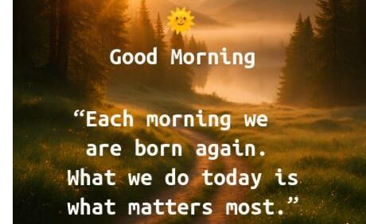
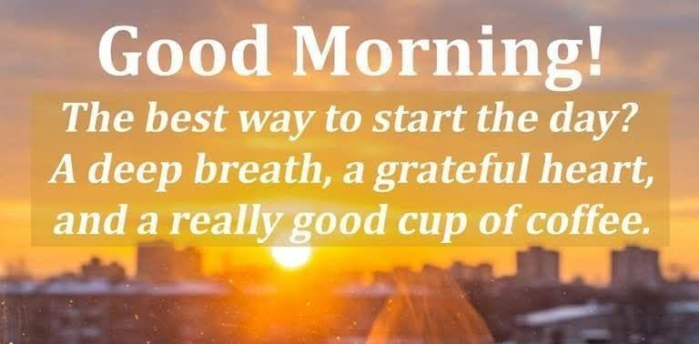
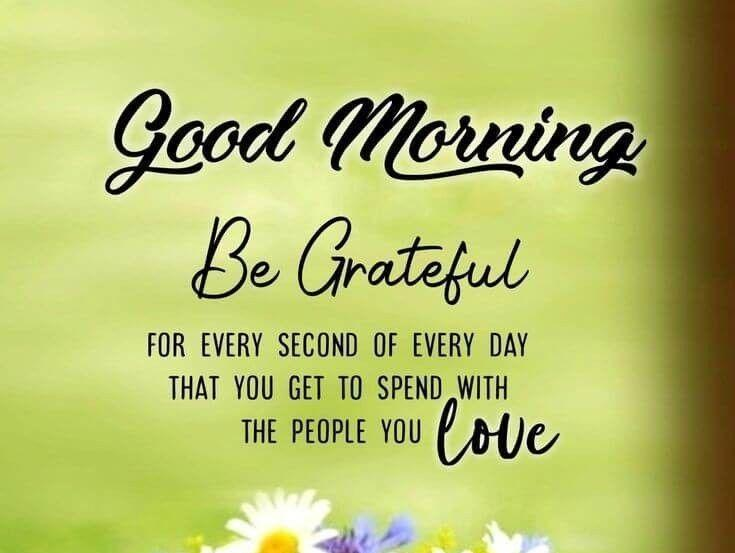

200 Good Morning Messages for Friends, Family, and Loved Ones
A simple good morning message can make someone's day brighter before it even begins. Whether you're sending warm wishes to a close friend, encouraging a family member, or expressing your love to someone special, thoughtful morning greetings can strengthen relationships and spread happiness.
Every sunrise brings a new opportunity to inspire, encourage, and remind the people we care about how much they mean to us. A few heartfelt words can lift someone's spirit, bring a smile to their face, and motivate them to face the day with confidence and hope.
In today's busy world, taking a few seconds to send a kind message is a meaningful way to show love, appreciation, and support. Whether it's through a text message, WhatsApp, Facebook, Instagram, or any other social media platform, a genuine good morning wish can create lasting memories and deepen personal connections.
In this collection, you'll discover 200 carefully written Good Morning Messages organized into four categories to make it easy to find the perfect message for every occasion:
- Good Morning Messages for Friends – Cheerful and encouraging messages to let your friends know you're thinking of them.
- Good Morning Messages for Family – Heartwarming greetings that express gratitude, love, and blessings for parents, siblings, grandparents, children, and relatives.
- Romantic Good Morning Messages for Loved Ones – Sweet and affectionate messages for your husband, wife, boyfriend, girlfriend, fiancé, or soulmate.
- Inspirational and Motivational Good Morning Messages – Uplifting words filled with hope, positivity, and encouragement to help anyone start the day with confidence.
Whether you want to make someone smile, inspire them to chase their dreams, strengthen your relationships, or simply brighten their morning, you'll find the perfect message in this collection.
Take a moment to share these beautiful good morning wishes with the people who matter most. A thoughtful message can turn an ordinary morning into an unforgettable one, reminding your friends, family, and loved ones that they are appreciated, valued, and deeply cared for.
So, grab your favorite cup of coffee, enjoy the beauty of a new sunrise, and explore this inspiring collection of Good Morning Messages for Friends, Family, and Loved Ones. Share the joy, spread positivity, and help make every morning a little brighter—one heartfelt message at a time.
Good Morning Messages for Friends (Messages 1-50)
Messages for Friends
A true friend deserves kind words to begin the day. Brighten your friends' mornings with these thoughtful, encouraging, and cheerful good morning messages.
1. Good morning, my dear friend! May your day be filled with happiness, laughter, and endless opportunities.
  
2. Rise and shine! Wishing you a day full of success, peace, and wonderful surprises.
3. Every sunrise is a reminder that life is full of new beginnings. Have a beautiful morning, my friend.
4. Good morning! May today bring you closer to your dreams and fill your heart with joy.
5. Sending you warm wishes for a productive, peaceful, and joyful day ahead.
6. A beautiful morning begins with a grateful heart. Wishing you countless blessings today.
7. Good morning! Keep smiling because your positive attitude inspires everyone around you.
8. May your coffee be hot, your worries be few, and your blessings be many.
9. Good morning, friend! Believe in yourself because you're capable of amazing things.
10. May your morning be bright and your entire day be filled with beautiful moments.
11. A new day means another chance to succeed. Go out there and make today count.
12. Wishing you strength for every challenge and joy in every little victory today.
13. Good morning! May peace surround you and happiness follow you wherever you go.
14. Wake up with confidence and face today with courage. Great things are waiting for you.
15. Good morning! Every day is another opportunity to write a beautiful chapter in your life.
16. May your day be as wonderful as your friendship has been to me.
17. Good morning! Keep believing, keep growing, and never stop chasing your dreams.
18. Smile today because brighter days always begin with positive thoughts.
19. Sending you positive energy and lots of happiness this beautiful morning.
20. Good morning, my friend! Never underestimate the power of a fresh start.
21. Today is another blessing. Make every moment count and enjoy every opportunity.
22. Wishing you endless reasons to smile from sunrise until sunset.
23. Good morning! Stay kind, stay humble, and let your light shine brightly today.
24. Every morning is another chance to become a better version of yourself.
25. May today's challenges become tomorrow's success stories. Have a fantastic morning!
26. Good morning! Keep your heart full of hope and your mind focused on your goals.
27. Your friendship makes life brighter. I hope your morning is just as wonderful.
28. Start today with gratitude, and you'll discover countless blessings along the way.
29. Good morning! May your hard work bring amazing rewards today.
30. Every sunrise reminds us that life is full of possibilities. Enjoy every minute.
31. May your day overflow with kindness, peace, and unforgettable memories.
32. Good morning! Happiness begins with appreciating the little things in life.
33. Wishing you confidence to overcome every obstacle and wisdom to make great decisions.
34. Good morning, dear friend! Keep your head high and your heart full of hope.
35. May every step you take today lead you closer to success.
36. Good morning! Stay motivated because your future is brighter than you imagine.
37. Let today be filled with laughter, love, and meaningful moments.
38. Every morning is proof that life gives us another opportunity to succeed.
39. Good morning! Never stop believing that your best days are still ahead.
40. Wishing you endless peace, perfect health, and abundant happiness today.
41. Good morning! Let your smile brighten someone's day just as your friendship brightens mine.
42. A fresh morning brings fresh hope. Keep moving forward with confidence.
43. Good morning! Success comes to those who remain determined and never quit.
44. May every hour today bring new blessings into your life.
45. Good morning! Surround yourself with positivity and watch amazing things happen.
46. Friendship is life's greatest gift. Thank you for being such an amazing friend. Have a wonderful morning!
47. Good morning! Trust God's timing and keep believing in brighter days ahead.
48. Wake up with faith, work with determination, and end the day with gratitude.
49. Good morning! May today be filled with unexpected blessings and joyful surprises.
50. Have a peaceful morning, a successful afternoon, and a relaxing evening. Wishing you a truly amazing day!
Good Morning Messages for Family (Messages 51–100)
Good Morning Messages for Family
Family is life's greatest blessing. These heartfelt good morning messages are perfect for parents, siblings, grandparents, children, and other cherished family members.
51. Good morning, dear family! May our home always be filled with love, peace, and happiness.
52. Wishing each member of our family a joyful morning and a day full of blessings.
53. Good morning! May God protect our family and guide us throughout this beautiful day.
54. Every sunrise reminds me how thankful I am to have such a wonderful family. Have a blessed morning.
55. Good morning! May our hearts remain united in love and kindness every single day.
56. Wishing my amazing family good health, happiness, and success today.
57. Rise and shine! May today bring smiles, laughter, and unforgettable moments to our family.
58. Good morning! Thank you all for making life beautiful with your endless love and support.
59. May your morning begin with peace and your day end with countless blessings.
60. Good morning to the people who mean the world to me. Have a wonderful day ahead.
61. Family is life's greatest treasure. Wishing you all a peaceful and joyful morning.
62. Good morning! May today be filled with hope, love, and exciting opportunities.
63. Sending warm morning hugs and heartfelt wishes to my wonderful family.
64. Good morning! May happiness knock on every door in our home today.
65. Every day is brighter because I have such an incredible family. Have an amazing morning.
66. Good morning! May our family always find strength in love and faith.
67. Wishing everyone a productive day filled with success and endless smiles.
68. Good morning! May your heart be filled with gratitude for another beautiful day.
69. Thank you for your love, encouragement, and support. Have a fantastic morning!
70. Good morning! Together we can overcome every challenge that comes our way.
71. May this morning bring fresh hope and renewed strength to every member of our family.
72. Good morning! Never forget how deeply you are loved and appreciated.
73. Wishing our family endless joy, perfect health, and lasting peace today.
74. Good morning! May every dream you have move one step closer to becoming reality.
75. A loving family makes every morning brighter. Have a beautiful day ahead.
76. Good morning! May kindness, patience, and understanding fill our hearts today.
77. Sending prayers for safety, happiness, and success to everyone in our family.
78. Good morning! May your efforts today bring wonderful rewards tomorrow.
79. Every sunrise is another reminder of God's goodness. Stay blessed always.
80. Good morning! Wishing our home endless laughter and countless beautiful memories.
81. May today bring you strength to overcome every obstacle and wisdom to make great decisions.
82. Good morning! Family is where love begins and never ends. Have a blessed day.
83. Thank you for always being there through every season of life. Good morning!
84. Good morning! Keep smiling because brighter days are always ahead.
85. May your heart remain peaceful and your spirit remain joyful throughout today.
86. Good morning! Wishing you success in everything you set out to accomplish today.
87. May happiness fill every room in our home this morning and every day.
88. Good morning! Together, we are stronger, happier, and more blessed.
89. Wishing you a beautiful sunrise and a day overflowing with love and laughter.
90. Good morning! May every challenge become an opportunity for growth and success.
91. Thank you for making our family so special. Wishing you a wonderful morning.
92. Good morning! Let today be filled with gratitude, hope, and positive moments.
93. May your morning begin with peace and your evening end with satisfaction.
94. Good morning! Never stop believing that wonderful things are coming your way.
95. Wishing our family continued unity, happiness, and countless blessings today.
96. Good morning! Every new day is another chance to love, forgive, and appreciate one another.
97. May your day be productive, peaceful, and filled with pleasant surprises.
98. Good morning! Thank you for being the greatest blessing in my life.
99. May God's favor surround our family today and always. Have a beautiful morning.
100. Good morning to my precious family! May today bring love to our hearts, joy to our home, and blessings beyond measure.
Romantic Good Morning Messages for Your Loved One (Messages 101–150)
Romantic Good Morning Messages
Nothing makes your partner smile more than waking up to a heartfelt message. These romantic good morning wishes are perfect for your husband, wife, boyfriend, girlfriend, fiancé, or someone special.
101. Good morning, my love! Every sunrise reminds me how blessed I am to have you in my life.
102. Waking up knowing you're in my life makes every morning brighter. Have a wonderful day, sweetheart.
103. Good morning, my heart. I hope today brings you as much happiness as you bring into my life.
104. Every morning begins beautifully because I have someone as amazing as you to love.
105. Good morning, my darling! May your day be filled with smiles, love, and beautiful surprises.
106. The first thought on my mind every morning is you. Have an incredible day, my love.
107. Good morning! I wish I could be there to greet you with a warm hug and a sweet kiss.
108. No matter how far apart we are, my heart wakes up loving you even more each day.
109. Good morning, beautiful. May your smile shine brighter than the morning sun.
110. Every sunrise reminds me that our love is another beautiful blessing from God.
111. Good morning to the one who completes my world. I hope your day is as wonderful as you are.
112. My mornings are happier because they begin with thoughts of you.
113. Good morning, sweetheart! Never forget how deeply you are loved.
114. I pray today brings you peace, success, and countless reasons to smile.
115. Good morning, my forever love. Thank you for making every day worth living.
116. May your day be filled with laughter, happiness, and endless love.
117. Good morning! I can't wait until we're together again.
118. Every heartbeat reminds me how lucky I am to love you.
119. Good morning, my sunshine. You brighten my world every single day.
120. I hope your morning is as sweet and beautiful as your heart.
121. Good morning! Thank you for loving me exactly as I am.
122. Distance may separate us, but nothing can separate our hearts.
123. Good morning, my angel. May today be full of blessings and unforgettable moments.
124. Every day spent loving you is another beautiful chapter in our story.
125. Good morning! I hope today brings you one step closer to every dream you have.
126. You are my greatest blessing, my best friend, and my forever love.
127. Good morning, my precious one. I hope your heart is filled with joy today.
128. Loving you is the easiest and happiest part of my life.
129. Good morning! My love for you grows stronger with every sunrise.
130. Thank you for bringing peace, laughter, and endless happiness into my life.
131. Good morning, sweetheart. Remember that I'll always be cheering you on.
132. I fall in love with you all over again every single morning.
133. Good morning! May your day be as amazing as the love we share.
134. I treasure every memory we've made and look forward to creating many more.
135. Good morning, my love. You are the reason my heart smiles every day.
136. Wishing you a peaceful morning and a successful day filled with happiness.
137. Every sunrise gives me another reason to thank God for bringing you into my life.
138. Good morning! I hope today is filled with wonderful surprises just for you.
139. My favorite place will always be wherever you are.
140. Good morning, my darling. Never stop believing in yourself because I always believe in you.
141. Your love gives me strength, hope, and endless happiness every day.
142. Good morning! I hope your day is filled with love, laughter, and beautiful memories.
143. Every morning is another opportunity to remind you how much I love you.
144. Good morning, my soulmate. Thank you for making my life complete.
145. May today bring you success, peace, and countless reasons to smile.
146. Good morning! My heart belongs to you today, tomorrow, and always.
147. No matter what today brings, remember that you are deeply loved.
148. Good morning, my forever person. I hope your day is filled with joy and positivity.
149. Every sunrise reminds me that our best days are still ahead.
150. Good morning, my love! I can't wait to see you again and create more beautiful memories together.
Inspirational & Motivational Good Morning Messages (Messages 151–200)
Inspirational & Motivational Good Morning Messages
Every new day is a fresh opportunity to grow, succeed, and inspire others. Share these motivational good morning messages to encourage someone to start the day with confidence, hope, and determination.
151. Good morning! Today is a brand-new opportunity to become the best version of yourself.
152. Every sunrise brings a fresh beginning. Leave yesterday behind and embrace today with confidence.
153. Good morning! Believe in your dreams, work hard, and success will follow.
154. Start your day with gratitude, and you'll discover blessings in every moment.
155. Good morning! Small steps taken consistently lead to great achievements.
156. Don't wait for the perfect opportunity—create it. Have a productive morning!
157. Every challenge you face today is preparing you for a brighter tomorrow.
158. Good morning! Your attitude today will shape your success tomorrow.
159. Wake up with determination and go to bed with satisfaction.
160. Good morning! You are stronger, wiser, and more capable than you realize.
161. Success begins with believing that you can.
162. Good morning! Stay positive, stay focused, and never give up.
163. The future belongs to those who keep moving forward despite obstacles.
164. Good morning! Great things happen to people who refuse to quit.
165. Every sunrise is proof that life always gives us another chance.
166. Good morning! Turn your dreams into goals and your goals into reality.
167. Never let fear stop you from chasing your purpose.
168. Good morning! A grateful heart attracts countless blessings.
169. Stay patient, trust the process, and keep working hard.
170. Good morning! Success is built one day, one choice, and one effort at a time.
171. Your greatest competition is the person you were yesterday.
172. Good morning! Fill your mind with positive thoughts and your day with positive actions.
173. Hard work and consistency always produce meaningful results.
174. Good morning! Every morning is another chance to rewrite your story.
175. Believe that something wonderful is about to happen today.
176. Good morning! Don't count the hours—make every hour count.
177. Stay focused on your goals and never lose sight of your purpose.
178. Good morning! The best investment you can make is in yourself.
179. Every successful person once started exactly where you are now.
180. Good morning! Keep your faith stronger than your fears.
181. Your potential is limitless when you refuse to give up.
182. Good morning! Every effort you make today brings you closer to your dreams.
183. Happiness begins when you appreciate what you already have.
184. Good morning! Let your courage be greater than your doubts.
185. Success comes to those who stay committed, even when the journey is difficult.
186. Good morning! Focus on progress instead of perfection.
187. Every sunrise is a reminder that hope never fades.
188. Good morning! Choose kindness, spread positivity, and inspire others.
189. The strongest people are those who never stop learning.
190. Good morning! Today is another chance to build the future you deserve.
191. Your determination today creates your success tomorrow.
192. Good morning! Don't let yesterday's failures steal today's opportunities.
193. Believe in yourself, because amazing things begin with confidence.
194. Good morning! Every obstacle is an opportunity to grow stronger.
195. Stay humble, work hard, and let your results speak for themselves.
196. Good morning! The journey may be long, but every step forward matters.
197. Fill your heart with hope and your mind with possibilities.
198. Good morning! Never stop dreaming, learning, and improving.
199. Let today be remembered as the day you refused to give up.
200. Good morning! May your day be filled with purpose, your heart with peace, and your life with endless blessings. Go confidently and make today extraordinary!